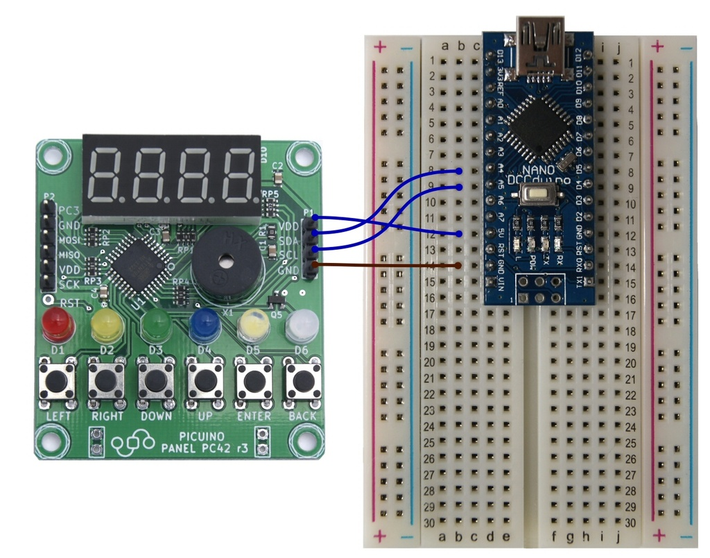

2. Instalación del panel de control PC42¶
Objetivos¶
- Conectar el panel de control PC42 a una placa Arduino
- Instalar las
librerías necesarias para programar el panel PC42 - Instalar la
herramienta Ardublock-Picuinopara programar con bloques gráficos - Instalar otras
librerías auxiliares de Arduino
Instalación¶
Para instalar el panel de control Picuino PC42 es necesario realizar dos operaciones:
- Conectar el panel PC42 a un Arduino mediante 4 cables macho-hembra
- Instalar la librería de control PC42
Además se puede añadir la herramienta Ardublock de programación por bloques.
Conexión con Arduino UNO¶

Las conexiones necesarias para comunicar la placa Arduino UNO con el panel PC42 se listan en la siguiente tabla:
Pin Color Panel PC42 Arduino UNO 1 Azul Vdd +5V Vdd +5V 2 Azul SDA A4 3 Azul SCL A5 4 Marrón GND 0V GND 0V
Las conexiones del panel PC42 están protegidas contra inversión de polaridad, de manera que el panel no se dañará aunque se intercambien los cables entre sí. La única conexión que puede causar daños permanentes en el panel es una alimentación por encima de 5 voltios, que se puede encontrar en el pin "Vin" de Arduino cuando este es alimentado con batería externa.
Conexión con Arduino Nano¶
{kind=link}
Las conexiones necesarias para comunicar la placa Arduino Nano con el panel PC42 se listan en la siguiente tabla:
Pin Color Panel PC42 Arduino Nano 1 Azul Vdd +5V Vdd +5V 2 Azul SDA A4 3 Azul SCL A5 4 Marrón GND 0V GND 0V
Instalación del entorno Arduino¶
Para poder trabajar con la placa Arduino es necesario instalar el software de programación de Arduino y los drivers correspondientes.
En la sección de solución de problemas con Arduino se pueden encontrar todos los pasos para instalar el software de la placa Arduino y resolver los errores de instalación más frecuentes.
Instalación de la librería para el panel PC42¶
Para que el panel de control PC42 pueda funcionar es necesario descargar e instalar una librería para Arduino.
Descargar la librería del panel de control PC42 para Arduino.
Seguir los pasos de instalación descritos en la siguiente página.
Instalación de Ardublock¶
Ardublock es una herramienta para Arduino que permite programar con bloques gráficos. Está orientada para facilitar la programación a los usuarios sin experiencia, simplificando mucho la tarea de realizar programas con un sencillo entorno gráfico.

La versión de Ardublock-Picuino es aún más simple que el proyecto Ardublock original y contiene las instrucciones necesarias para la programación del panel de control PC42.
Para instalar la última versión de Ardublock-Picuino hay que seguir los siguentes pasos:
Descargar la
herramienta Ardublock-PicuinoCopiar el archivo en el directorio de Arduino. El directorio se puede encontrar en el entorno de Arduino, pulsando el menú:
Archivo... Preferencias... Localización del proyecto.Descomprir el archivo en el directorio de Arduino.
Cerrar y volver a abrir el entorno de Arduino. La nueva herramienta debe aparecer en el menú:
Herramientas... Ardublock
Instalación de librerías auxiliares para Arduino¶
Estas librerías permiten que la placa Arduino controle periféricos tales como un un panel visualizador LCD o emisores y receptores infrarrojos.
archivo de librerías para Arduino
En este paquete se pueden encontrar juntas las siguientes librerías:
dht11control del sensor de humedad y temperatura DHT11IRremotecontrol de emisores y receptores de infrarrojosLiquidCrystalcontrol de paneles visualizadores LCDNewliquidCrystalcontrol de paneles visualizadores LCDSCoopprogramación multitareaSDPlusmanejo de memorias SDmakeblockmanejo de robots y gadgets de MakeblockPC42manejo del panel de control Picuino PC42
Para instalar todas las librerías a la vez, hay que seguir los siguientes pasos:
Descargar el
archivo con las librerías para ArduinoCopiar el archivo en el directorio de Arduino. El directorio se puede encontrar en el entorno de Arduino, pulsando el menú:
Archivo... Preferencias... Localización del proyecto.Descomprir el archivo en el directorio de Arduino.
Cerrar y volver a abrir el entorno de Arduino. Las nuevas librerías deben aparecer en el menú:
Programa... Incluir librería...
Para instalar librerías individuales utilizando el entorno Arduino, se puede leer el siguiente enlace sobre cómo añadir una librería al entorno Arduino.